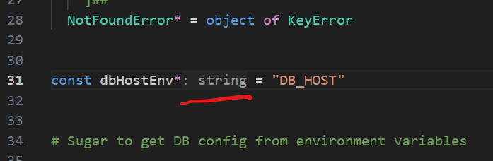
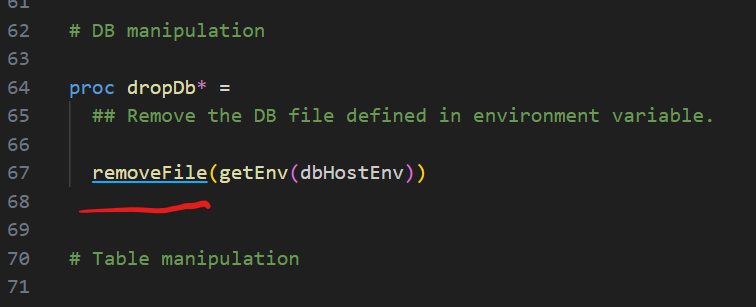
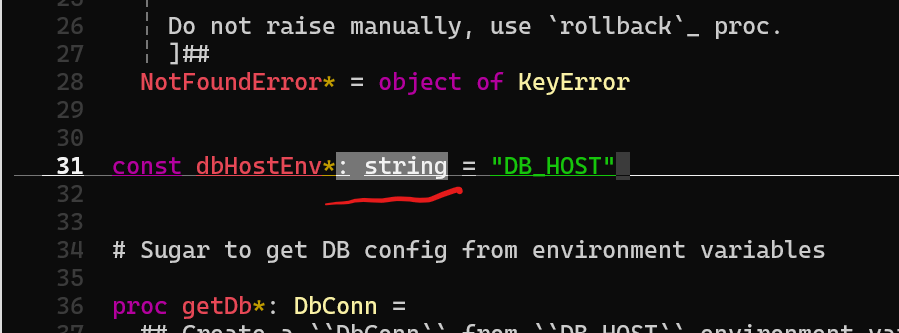
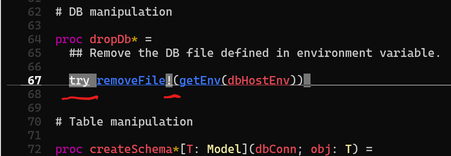
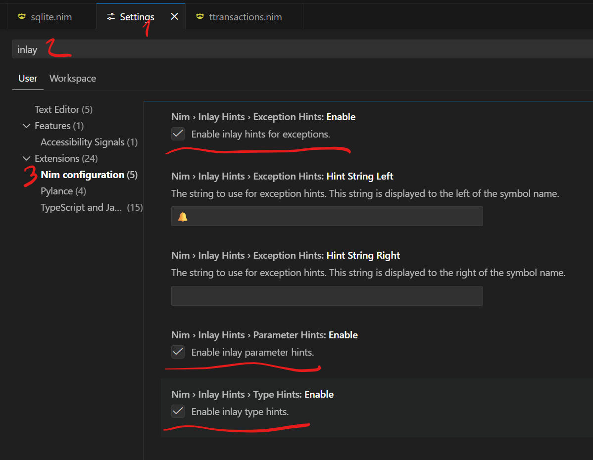

LSP Server
nimlangserver implements the Language Server Protocol (LSP) and provides Nim language intelligence to editors and IDEs. LSP is the default server mode.
Contents
Setup
VSCode
Install the vscode-nim extension and follow its setup instructions. The extension bundles both the LSP server and the MCP server, including the accompanying skill.
Sublime Text
Install LSP-nimlangserver from Package Control.
Zed Editor
Install the Nim Extension from the Zed Editor extensions panel.
Helix
Install nimlangserver with Nimble and make sure it is on your PATH. No additional configuration is needed.
Verify the setup:
$ hx --health nim
Configured language servers:
✓ nimlangserver: /home/username/.nimble/bin/nimlangserver
Configured debug adapter: None
Configured formatter:
✓ /home/username/.nimble/bin/nph
Tree-sitter parser: ✓
Highlight queries: ✓
Textobject queries: ✓
Indent queries: ✓
Neovim (lspconfig)
Install nvim-lspconfig via your plugin manager and add to your init.vim:
lua <<EOF
require'lspconfig'.nim_langserver.setup{
settings = {
nim = {
nimsuggestPath = "~/.nimble/bin/nimsuggest"
}
}
}
EOF
Defaults work for most users — you likely don't need to set nimsuggestPath at all. See the lspconfig documentation for key-binding and autocompletion setup.
VIM / Neovim (coc.nvim)
coc.nvim supports both Vim and Neovim and uses a VSCode-like coc-settings.json. Install the plugin, then create coc-settings.json alongside your init.vim:
{
"languageserver": {
"nim": {
"command": "nimlangserver",
"filetypes": ["nim"],
"trace.server": "verbose",
"settings": {
"nim": {
"nimsuggestPath": "~/.nimble/bin/nimsuggest"
}
}
}
}
}
Emacs
Install lsp-mode and nim-mode from MELPA, then add to your config:
(add-hook 'nim-mode-hook #'lsp)
Supported LSP features
- Initialize
- Completions
- Hover
- Goto definition
- Goto declaration
- Goto type definition
- Document symbols
- Find references
- Code actions
- Prepare rename
- Rename symbols
- Inlay hints
- Signature help
- Document formatting (requires
nphonPATH) - Execute command
- Workspace symbols
- Document highlight
- Shutdown
- Exit
Configuration
LSP configuration is supplied by the client/editor via nim.* settings.
| Setting | Description |
|---|---|
nim.projectMapping | Map file path patterns to nimsuggest project roots. |
nim.timeout | Request timeout in ms before nimlangserver restarts. Default: 2 minutes. |
nim.nimsuggestPath | Path to nimsuggest. Default: "nimsuggest". |
nim.autoCheckFile | Check the file on the fly. |
nim.autoCheckProject | Check the project after saving. |
nim.autoRestart | Auto-restart nimsuggest once after a crash. The server won't restart if there were no successful calls since the last restart. |
nim.workingDirectoryMapping | Configure the working directory for specific projects. |
nim.checkOnSave | Check the file on save. |
nim.logNimsuggest | Enable nimsuggest logging. |
nim.inlayHints | Configure inlay hints. |
nim.notificationVerbosity | Notification verbosity: "none", "error", "warning", or "info". |
nim.formatOnSave | Format on save (requires nph on PATH). |
nim.nimsuggestIdleTimeout | Timeout in ms before an idle nimsuggest is stopped. Default: 120 seconds. |
nim.useNimCheck | Use nim check instead of nimsuggest for linting. Default: true. |
nim.maxNimsuggestProcesses | Maximum number of live nimsuggest processes. 0 means unlimited. Default: 0. |
Project mapping example
{
"nim.projectMapping": [{
"projectFile": "tests/all.nim",
"fileRegex": "tests/.*\\.nim"
}, {
"projectFile": "main.nim",
"fileRegex": ".*\\.nim"
}]
}
When inside a Nimble project, nimble drives the entry points for nimsuggest automatically.
Inlay hints
Inlay hints are visual snippets displayed inline by the editor to provide context without cluttering the source.
nimlangserver provides three kinds:
- Type hints — show inferred variable types.
- Exception hints — highlight functions that raise exceptions.
- Parameter hints — show parameter names at call sites. (Not yet implemented — see issue #183.)
Screenshots
VSCode:
- Type hint:

- Exception hint:

Helix:


Enabling hints in VSCode
Inlay hints are enabled by default. To toggle individual kinds:
- Open Settings.
- Search for inlay.
- Navigate to Nim configuration.

Enabling hints in Neovim
lua << EOF
lspconfig.nim_langserver.setup({
settings = {
nim = {
inlayHints = {
typeHints = true,
exceptionHints = true,
parameterHints = true,
}
}
},
on_attach = function(client, bufnr)
if client.server_capabilities.inlayHintProvider then
vim.lsp.inlay_hint.enable(true, { bufnr = bufnr })
end
end
})
EOF
For Vim with coc.nvim, use the coc configuration block shown in the VIM/Neovim setup section above.
Enabling hints in Helix
Add to your languages.toml:
[language-server.nimlangserver.config.nim]
inlayHints = { typeHints = true, exceptionHints = true, parameterHints = true }
Extension methods
In addition to the standard LSP methods, nimlangserver provides Nim-specific extensions.
extension/macroExpand
Expands a macro or template at a given position.
Request:
type
ExpandTextDocumentPositionParams* = ref object of RootObj
textDocument*: TextDocumentIdentifier
position*: Position
level*: Option[int]
position— cursor position in the document.textDocument— the document.level— how many expansion levels to apply.
Response:
type
ExpandResult* = ref object of RootObj
range*: Range
content*: string
content— the expanded source.range— the original range of the unexpanded expression.
Example:
[Trace - 11:10:09 AM] Sending request 'extension/macroExpand - (141)'.
Params: {
"textDocument": {
"uri": "file:///.../tests/projects/hw/hw.nim"
},
"position": {
"line": 27,
"character": 2
},
"level": 1
}
[Trace - 11:10:10 AM] Received response 'extension/macroExpand - (141)' in 309ms.
Result: {
"range": {
"start": { "line": 27, "character": 0 },
"end": { "line": 28, "character": 19 }
},
"content": " block:\n template field1(): untyped =\n a.field1\n\n template field2(): untyped =\n a.field2\n\n field1 = field2"
}